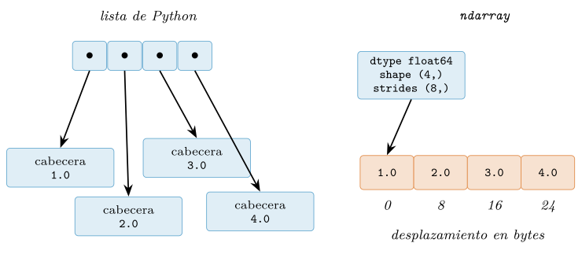
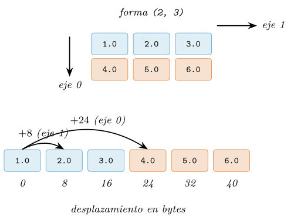
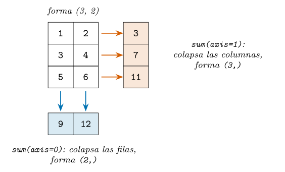
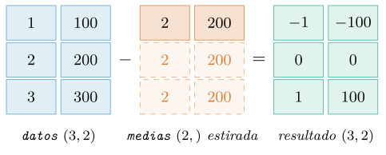
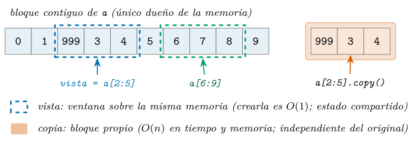
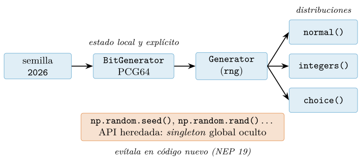

Capítulo 7. NumPy: cómputo vectorizado
▶ Ejecutar este capítulo en Binder
La primera vez que se abre, Binder construye el entorno en la nube (unos 10-20 min); verás una pantalla de progreso. Después queda en caché y abre en segundos. Si parece que no responde, espera a que termine de construirse o vuelve a intentarlo.
Con este capítulo comienza la Parte III y, con ella, el instrumental numérico de la ciencia de datos. NumPy es la biblioteca sobre la que descansa casi todo el ecosistema científico de Python: sus arrays son la moneda de cambio de SciPy (Virtanen et al. 2020), pandas, Matplotlib y scikit-learn, y su interfaz es hoy el estándar de facto del cómputo con arrays (Harris et al. 2020). La razón es de fondo: Python paga un sobrecoste por cada operación elemental, y NumPy lo elimina desplazando el bucle interno a código compilado sobre bloques homogéneos de memoria, con eficiencia comparable a la de los lenguajes compilados (Oliphant 2007). Aprenderemos qué es un ndarray y por qué su disposición en memoria explica sus virtudes (§7.1); la vectorización (vectorization), que sustituye bucles por operaciones sobre arrays completos (§7.2); el broadcasting (difusión de formas), que combina arrays de formas distintas bajo reglas precisas (§7.3); el indexado avanzado (§7.4); y el álgebra lineal que necesitaremos al modelar (§7.5).
Nada de esto parte de cero. En el cap. 2 estudiamos el modelo de datos de Python —identidad, referencias, mutabilidad— y cuánta memoria cuesta cada objeto: justo el vocabulario para entender qué elimina NumPy. En el cap. 3 escribimos bucles explícitos y anticipamos (§3.3.5) que muchos se sustituirían por operaciones vectorizadas: este capítulo salda esa promesa. En el cap. 4 medimos el coste de las estructuras nativas: la lista, tan flexible, no es gratis, y aquí llega la alternativa que la cambia por compacidad y velocidad. Hacia delante, el capítulo es cimiento literal: las Series y DataFrame de pandas que abordaremos en el cap. 8 son, por debajo, arrays con etiquetas (McKinney 2022), y cuando ajustemos modelos en los caps. 13 y 14 la matriz de características será un array (o algo construido sobre uno).
El array n-dimensional y la memoria contigua
El objeto central de NumPy es el ndarray (n-dimensional array): una rejilla de elementos, todos del mismo tipo, dispuestos en un bloque de memoria contigua. Cada pieza de la definición —homogeneidad, contigüidad, n dimensiones— tiene consecuencias profundas: contrastaremos el array con la lista (§7.1.1) y examinaremos el tipo común (§7.1.2), la forma y los strides (§7.1.3) y la construcción (§7.1.4).
El ndarray frente a la lista de Python
Recordemos cómo guarda Python una lista de números (§2.5.3): no contiene los valores, sino referencias a objetos independientes, y cada objeto lleva su cabecera —contador de referencias y puntero al tipo— además del valor útil (Ramalho 2022). En CPython 3.12 de 64 bits un float ocupa 24 bytes, de los que solo 8 son el número, y una lista de cuatro flotantes suma 88 bytes de estructura y punteros más 96 de objetos dispersos por el montón, que se recorren saltando de dirección en dirección (§4.1.3). El array invierte el diseño: almacena los valores en bruto, uno tras otro, en un bloque contiguo, y guarda aparte unos pocos metadatos —el tipo común dtype, la forma shape y los strides (zancadas entre elementos)— que indican cómo interpretarlo. Cuatro float64 ocupan exactamente 32 bytes de datos, con una sola cabecera para todo el array (figura 7.1).
import numpy as np
v = np.array([1.0, 2.0, 3.0, 4.0]) # [1. 2. 3. 4.]
print(v.dtype) # float64
print(v.itemsize) # 8 (bytes por elemento)
print(v.nbytes) # 32 (4 valores de 8 bytes, sin cabeceras)
ndarray en memoria. La lista guarda punteros a objetos dispersos, cada uno con su cabecera; el array, los valores en un bloque contiguo descrito por una única caja de metadatos (dtype, shape, strides).La compacidad no es la única ganancia. El procesador lee la memoria en líneas de caché de 64 bytes: al tocar el primer elemento de un array de float64, los siete siguientes llegan «gratis» en la misma línea y el prelector anticipa las siguientes (Drepper 2007); con una lista, cada salto de puntero es imprevisible y el procesador espera. La segunda ganancia es de tipo: con un dtype común, NumPy comprueba el tipo una vez por operación y delega el recorrido en un bucle compilado en C, mientras que Python despacha dinámicamente cada suma (Gorelick y Ozsvald 2020). Cuantificaremos la diferencia en la §7.2: el array no es «una lista más rápida», sino otra estructura, homogénea y pensada para operar en bloque.
El dtype: un único tipo para todos los elementos
Todo array tiene un tipo de dato (dtype) común a sus elementos: enteros con signo de tamaño fijo (int32, int64), flotantes IEEE 754 de simple y doble precisión (float32, float64), booleano (bool) o complejos (complex128), entre otros. Al construir desde literales, NumPy infiere el tipo: en plataformas de 64 bits, los enteros de Python dan int64 y los flotantes, float64.
a = np.array([1, 2, 3])
print(a.dtype) # int64
b = np.array([1, 2, 3], dtype=np.float32)
print(b.itemsize, b.nbytes) # 4 12
c = b.astype(np.float64) # conversion: crea una copia nueva
print(c.dtype) # float64
print(np.shares_memory(b, c)) # FalseEl dtype gobierna memoria y precisión. La memoria es aritmética simple: itemsize bytes por elemento y nbytes en total, sin sobrecoste por objeto; mil millones de float64 ocupan \(10^9 \times
8\) bytes, unos 8 GB, y en float32 caben en la mitad. Elegir el tipo es una decisión de ingeniería, no un detalle: las imágenes se almacenan en uint8 y buena parte del aprendizaje profundo entrena en float32 o menos. La contrapartida es la precisión: como estudiamos en la §2.6.2, la coma flotante representa los reales con error de redondeo acotado (Goldberg 1991): en la doble precisión del estándar IEEE 754 el error relativo unitario ronda \(2^{-53}
\approx 1{,}1 \times 10^{-16}\) (15–16 cifras) y en simple, \(10^{-7}\) (unas 7) (IEEE 2019); bajar a float32 divide por dos la memoria y también las cifras fiables.
Con los enteros el contrato también cambia: vimos en la §2.6 que el int de Python tiene precisión arbitraria y jamás se desborda; los de un array son de tamaño fijo, como en C, y su aritmética es modular: superar el rango «da la vuelta» sin excepción.
d = np.array([127], dtype=np.int8) # rango de int8: -128..127
print(d + 1) # [-128] <- desbordamiento silencioso
print(127 + 1) # 128 (int de Python: precision arbitraria)Forma, ejes y strides (zancadas)
Hasta aquí, arrays de una dimensión. La n de ndarray entra en juego con la forma (shape): una tupla con el tamaño de cada eje (axis). Una matriz de dos filas y tres columnas tiene forma (2, 3): su eje 0 recorre las filas y su eje 1, las columnas; esta numeración reaparecerá constantemente y conviene fijarla ya.
m = np.array([[1.0, 2.0, 3.0],
[4.0, 5.0, 6.0]])
print(m.shape, m.ndim, m.size) # (2, 3) 2 6
print(m.itemsize, m.nbytes) # 8 48
print(m.strides) # (24, 8)Lo notable es que el bloque de memoria sigue siendo unidimensional: seis valores contiguos. La matriz es una interpretación de ese bloque, codificada por los strides: cuántos bytes hay que saltar para avanzar una posición por cada eje. En m, una columna (eje 1) son 8 bytes y una fila (eje 0), \(3 \times 8 = 24\) bytes. Este convenio, con las filas contiguas, es el orden C o de fila mayor (row-major); el opuesto es el orden Fortran o de columna mayor (column-major), y NumPy admite ambos (parámetro order); la figura 7.2 muestra la correspondencia.

(2, 3) en orden C y su bloque físico contiguo. Los colores emparejan cada fila lógica con su tramo físico; los strides (24, 8) son los bytes saltados al avanzar por cada eje.Los strides parecen un tecnicismo, pero son la pieza que hace elegante el diseño del ndarray (Walt et al. 2011): cambiar la forma con reshape o trasponer con .T no copia el bloque, solo reescribe metadatos, y devuelve una vista (view): un nuevo array que comparte memoria con otra forma y otros strides. Por eso cuestan lo mismo sobre seis elementos que sobre seiscientos millones.
r = m.reshape(3, 2) # misma memoria, otra interpretacion
t = m.T # traspuesta: intercambia forma y strides
print(t.shape, t.strides) # (3, 2) (8, 24)
print(np.shares_memory(m, r), np.shares_memory(m, t)) # True True
m[0, 0] = 99.0
print(t[0, 0]) # 99.0 <- t ve el cambio: es una vistaLa traspuesta ilustra el truco: t tiene strides (8, 24), el mismo bloque leído «por columnas» —una traspuesta en orden C es, de hecho, un array en orden Fortran—. La contrapartida la conocemos del cap. 2: mutar el original se refleja en sus vistas; distinguir vista de copia es tan importante que volveremos sobre ello al estudiar el indexado (§7.4).
Construcción de arrays
La vía más directa es np.array sobre una lista (o lista de listas), como venimos haciendo. Para arrays grandes conviene ahorrarse la lista intermedia y usar las funciones de fábrica: np.zeros y np.ones crean arrays de la forma pedida, np.full los rellena con un valor arbitrario y np.eye da la matriz identidad.
z = np.zeros((3, 3)) # 3x3 de ceros, dtype float64
u = np.ones(4) # [1. 1. 1. 1.]
k = np.full((2, 2), 9.5) # [[9.5 9.5]
# [9.5 9.5]]
i = np.eye(3) # identidad 3x3
e = np.empty(4) # ¡memoria SIN inicializar!Merece un aviso np.empty: reserva el bloque sin inicializarlo, así que contiene basura; solo tiene sentido si se sobrescribe todo acto seguido, y si no, np.zeros cuesta casi lo mismo y evita errores no deterministas. Para secuencias regulares hay dos funciones. np.arange es el análogo de range (§3.4): genera desde un inicio hasta un final excluido con un paso dado, y es fiable con enteros; con paso fraccionario hereda los redondeos de la coma flotante de la §2.6.2 y puede producir un elemento de más.
print(np.arange(5)) # [0 1 2 3 4]
print(np.arange(0, 1, 0.1))
# [0. 0.1 0.2 0.3 0.4 0.5 0.6 0.7 0.8 0.9]
print(np.arange(1, 1.3, 0.1))
# [1. 1.1 1.2 1.3] <- ¡cuatro elementos e incluye el extremo!
print(np.linspace(0, 1, 11))
# [0. 0.1 0.2 0.3 0.4 0.5 0.6 0.7 0.8 0.9 1. ]El segundo arange funciona como se espera, pero el tercero incluye 1.3: el número de pasos se calcula como \(\lceil (\mathit{fin} -
\mathit{inicio}) / \mathit{paso} \rceil\) y el redondeo de \((1{,}3 - 1)/0{,}1\) lo empuja por encima de 3; la documentación recomienda no usar arange con pasos no enteros (NumPy Developers 2026). La alternativa es np.linspace, que recibe el número de puntos —extremos incluidos por defecto— y lo garantiza: arange para índices enteros, linspace para mallas de valores reales.
Queda la vía más frecuente en el análisis de datos: leer los valores desde un fichero. La posponemos porque la herramienta idónea no es NumPy en crudo sino pandas (cap. 8), donde veremos que cargar un CSV produce, por debajo, estos mismos arrays. Antes necesitamos el segundo pilar del capítulo: operar sobre un array entero sin escribir el bucle, y por qué es tanto más rápido (§7.2).
Vectorización, ufunc y por qué evitar los bucles
En la sección anterior (§7.1) vimos qué es un ndarray: memoria contigua, dtype homogéneo, una forma. Esta sección explica para qué sirve: la aportación central de NumPy no es el contenedor, sino el estilo de cómputo que hace posible —operar sobre el array completo de una sola vez, sin bucles en Python—. Veremos qué son las funciones universales, por qué superan al bucle en uno o dos órdenes de magnitud, y cómo el principio se extiende a las máscaras booleanas y a las agregaciones gobernadas por axis.
Funciones universales: la operación viaja al array
Aplicar una operación a todos los elementos de un array de una sola vez, en lugar de visitarlos uno a uno desde Python, es lo que se denomina la vectorización (vectorization). En NumPy la implementan las funciones universales o ufuncs (universal functions): rutinas compiladas que aplican una operación elemento a elemento sobre el array completo y devuelven un array nuevo (Harris et al. 2020). Las hay unarias —np.sqrt, np.exp, np.sin— y binarias —np.add, np.maximum—, y cubren de la aritmética a las comparaciones, pasando por la trigonometría (NumPy Developers 2026). Ni siquiera hace falta llamarlas por su nombre: los operadores de Python sobre arrays se traducen en ufuncs (x + y ejecuta np.add(x, y); x > 25, np.greater(x, 25)).
import numpy as np
x = np.arange(1_000_000) # 0, 1, 2, ..., 999_999
y = np.sqrt(x) * 2 + 1 # un millon de operaciones, cero bucles
y[:4]
# array([1. , 3. , 3.82842712, 4.46410162])La segunda línea condensa el estilo entero. np.sqrt(x) calcula el millón de raíces en una sola llamada; * 2 y + 1 son también ufuncs que combinan cada elemento con un escalar, el caso más sencillo del broadcasting que abordaremos en §7.3. Nótese que no hay ningún for: la iteración existe, pero dentro de la ufunc, en código compilado. Y con el ejemplo recurrente del libro se lee igual: si energy es un vector [sintético] con el rasgo de energía (entre 0 y 1) de un puñado de pistas —lo construiremos con la semilla 2026 en la §7.4.3—, expresar esa energía en una escala de 0 a 100 es energy * 100, y el exceso sobre el umbral de referencia de 0,8 que marca un «temazo», energy - 0.8: ni un bucle a la vista.
El coste del bucle: dónde se va el tiempo
¿Por qué insistimos en evitar el bucle? La respuesta está en el modelo de objetos que estudiamos en §2.5.3: en Python puro cada número es un objeto completo —cabecera, puntero al tipo, contador de referencias— y una lista no guarda números, sino referencias a objetos dispersos por la memoria (§4.1.3). Al ejecutar for v in x:, el intérprete repite en cada iteración el mismo trabajo administrativo: obtiene el siguiente objeto por el protocolo de iteración (§3.4), comprueba su tipo, despacha la operación y construye un objeto nuevo para el resultado. Repetido un millón de veces, ese peaje domina el tiempo total: la operación aritmética «útil» es una fracción minúscula.
La ufunc paga ese peaje una sola vez por llamada: comprueba el dtype, selecciona el bucle compilado especializado y recorre la memoria de principio a fin. Al ser contigua —ocho bytes por float64, uno detrás de otro—, el procesador carga líneas de caché completas y anticipa los accesos secuenciales, en vez de perseguir punteros dispersos que arruinan esas optimizaciones (Drepper 2007). Ya anticipamos la idea en §3.3.5; ahora podemos medirla.
import math
import timeit
def con_bucle(datos):
return [math.sqrt(v) * 2 + 1 for v in datos]
t_bucle = timeit.timeit(lambda: con_bucle(x), number=10)
t_ufunc = timeit.timeit(lambda: np.sqrt(x) * 2 + 1, number=10)
cociente = t_bucle / t_ufunc # adimensional: no depende del relojDeliberadamente no imprimimos t_bucle ni t_ufunc: los tiempos absolutos dependen de la máquina, del intérprete y hasta de la carga del sistema, y cualquier cifra impresa aquí envejecería mal. Lo informativo es el cociente: la función cociente_vectorizacion de src/cap07_numpy.py repite esta medición con timeit y devuelve ese número adimensional, del orden de 30–100 en una máquina típica de 2026. La versión vectorizada es entre uno y dos órdenes de magnitud más rápida; el valor exacto varía con la máquina, el orden no. La vectorización es la estrategia central del cómputo numérico en Python (Walt et al. 2011) y la primera palanca de rendimiento, antes que el paralelismo o los compiladores (Gorelick y Ozsvald 2020).
Dos matices completan el diagnóstico. Primero, una comprensión de listas sigue siendo un bucle de Python: más compacta, sí, pero no más rápida. Segundo, la regla operativa: si nos sorprendemos escribiendo un for sobre los elementos de un array, casi siempre existe una formulación vectorizada mejor. Hay excepciones —algoritmos con dependencias secuenciales—, pero son minoría, y el resto del capítulo amplía el repertorio para que lo sean cada vez más.
Comparaciones vectorizadas y máscaras booleanas
Las comparaciones también son ufuncs. Comparar un array con un valor no devuelve True o False, sino un array de booleanos con el resultado elemento a elemento: una máscara booleana.
tempo = np.array([128.0, 92.5, 140.0, 118.0, 122.5, 85.0, 110.0])
rapidas = tempo > 120 # ufunc np.greater
# array([ True, False, True, False, True, False, False])
rapidas.sum() # True cuenta como 1
# 3
tempo[rapidas] # filtrado con la mascara
# array([128. , 140. , 122.5])La máscara alimenta las dos operaciones canónicas del análisis. La primera es contar: como True vale 1 y False vale 0, sumar la máscara cuenta cuántos elementos cumplen la condición (y su media es la proporción que la cumple). La segunda es filtrar: indexar el array con la máscara selecciona los elementos donde vale True; el indexado booleano en detalle lo veremos en §7.4. El mismo patrón responde preguntas sobre el catálogo sin un solo condicional: (energy > 0.8).sum() cuenta cuántas pistas superan el umbral de temazo de 0,8, y energy[energy > 0.8].mean() da la energía media de ese grupo (VanderPlas 2023).
Para combinar condiciones se usan los operadores & (y), | (o) y ~ (no), siempre con paréntesis alrededor de cada comparación, porque esos operadores tienen mayor precedencia. Los conectores and y or de Python no sirven aquí: intentan reducir cada operando a un único valor de verdad y, como vimos al estudiar la veracidad en el cap. 3, la de un array con más de un elemento es ambigua, así que NumPy los rechaza con un error.
intermedias = (tempo > 100) & (tempo <= 120)
intermedias.sum()
# 2
tempo > 100 and tempo <= 120
# ValueError: The truth value of an array with more than one
# element is ambiguous. Use a.any() or a.all()Cierra el repertorio la selección condicional: np.where(cond, a, b) construye un array que toma de a donde la condición es cierta y de b donde no, y np.select generaliza el patrón a varias condiciones evaluadas en orden, con un valor por defecto.
np.where(tempo > 120, "rápida", "lenta")
# array(['rápida', 'lenta', 'rápida', 'lenta', 'rápida',
# 'lenta', 'lenta'], dtype='<U6')Agregaciones y el parámetro axis
El tercer pilar del estilo vectorizado son las agregaciones: operaciones que reducen un array a menos números, o a uno solo. sum, mean, std, min y max devuelven el estadístico correspondiente; argmin y argmax, la posición del extremo, no su valor. Casi todas existen como método del array (a.sum()) y como función equivalente del módulo (np.sum(a)), que acepta además cualquier secuencia de Python. Cuando el operando ya es un array preferimos el método, el mismo estilo que adoptará pandas (McKinney 2022).
# energy y genero: la mini-tabla de musica [sintetica] que se
# construye en la seccion de indexado booleano (semilla 2026)
energy.mean() # energia media de la lista
energy.std() # dispersion: desviacion tipica
energy.min(), energy.max() # la pista mas calmada y la mas intensa
calmada = energy.argmin() # POSICION del minimo, no su valor
genero[calmada] # genero de la pista (array paralelo)Con arrays de más de una dimensión aparece la pregunta clave: ¿agregar todo, o agregar a lo largo de un eje? La responde el parámetro axis, cuya semántica merece enunciarse con precisión: axis=k es el eje que desaparece del resultado.
datos = np.array([[1, 2],
[3, 4],
[5, 6]]) # forma (3, 2): 3 filas, 2 columnas
datos.sum() # sin axis: agrega todo -> escalar
# 21
datos.sum(axis=0) # desaparece el eje 0: un total POR COLUMNA
# array([ 9, 12]) # forma (2,)
datos.sum(axis=1) # desaparece el eje 1: un total POR FILA
# array([ 3, 7, 11]) # forma (3,)Sobre la forma \((3, 2)\), axis=0 elimina el eje de longitud 3 y deja la suma por columna, forma \((2,)\); axis=1 elimina el de longitud 2 y deja la suma por fila, forma \((3,)\): figura 7.3.

axis en las agregaciones. Agregar con axis sobre una matriz de forma \((3, 2)\): con axis=0 desaparece el eje de las filas y queda un resultado por columna, de forma \((2,)\); con axis=1 desaparece el eje de las columnas y queda un resultado por fila, de forma \((3,)\).Con ufuncs, máscaras y agregaciones queda dibujado el núcleo del estilo vectorizado. Faltan dos piezas, que abordaremos a continuación: las reglas para operar arrays de formas distintas —el broadcasting de §7.3— y el indexado de §7.4.
Broadcasting: aritmética entre formas distintas
Las ufuncs que vimos en §7.2 operan elemento a elemento y, en apariencia, exigen operandos de forma idéntica. Los datos reales rara vez cooperan: una tabla de mediciones tiene forma \((n, d)\), sus medias por columna \((d,)\) y el umbral con el que comparamos es un escalar. El mecanismo que reconcilia estas formas es el broadcasting (difusión de formas): el conjunto de reglas por el que NumPy opera entre arrays de formas distintas «estirando» virtualmente el más pequeño, sin copiar ni un solo dato (NumPy Developers 2026); es una seña de identidad del cómputo con arrays (Walt et al. 2011).
Las reglas del juego
Ante dos arrays de formas distintas, NumPy decide si son compatibles —y qué forma tendrá el resultado— con tres reglas (NumPy Developers 2026):
Las formas se comparan dimensión a dimensión, de derecha a izquierda: primero el último eje, luego el penúltimo, etc.
Dos dimensiones son compatibles si son iguales o si una de ellas vale 1; en este último caso, la de tamaño 1 se estira virtualmente hasta igualar a la otra, sin copiar datos.
Si un operando tiene menos dimensiones que el otro, se le anteponen por la izquierda tantas dimensiones de tamaño 1 como falten.
El caso más simple es el escalar, que ya usamos sin darle nombre: en datos * 10.0, el escalar se comporta como un array de forma \(()\) al que las reglas estiran hasta cubrir toda la tabla.
datos = np.array([[1.0, 100.0],
[2.0, 200.0],
[3.0, 300.0]]) # forma (3, 2)
datos * 10.0 # escalar: actua sobre los 6 elementos
medias = np.array([2.0, 200.0]) # = datos.mean(axis=0), forma (2,)
datos - medias # (3, 2) - (2,) -> (3, 2)Sigamos las reglas con datos - medias: las formas son \((3, 2)\) y \((2,)\); la segunda se completa a \((1, 2)\) (regla 3), el último eje casa (\(2 = 2\)) y el primero enfrenta un 3 con un 1: la fila se estira a tres copias virtuales y el resultado es \((3, 2)\). La Figura 7.4 lo representa: las filas «fantasma» no existen en memoria; la implementación recorre la misma fila con un stride nulo en el eje estirado, según el modelo de zancadas que vimos en §7.1. Esta semántica es hoy un estándar de facto en las bibliotecas de arrays (Harris et al. 2020).

El estirón es gratis en los operandos: solo se materializa el array del resultado. Volveremos sobre este matiz en §7.3.3.
El caso canónico: centrar columnas
Si un ejemplo justifica por sí solo el broadcasting, es el centrado de columnas: restar a cada variable su media para dejarla alrededor de cero.
medias = datos.mean(axis=0) # forma (2,)
centrado = datos - medias # (3, 2) - (2,) -> (3, 2)
print(np.allclose(centrado.mean(axis=0), 0.0)) # TrueEs exactamente la función centrar_columnas del código de acompañamiento (véase src/cap07_numpy.py), que además verifica el resultado. La comprobación usa np.allclose y no una igualdad estricta: las medias se calculan en aritmética de coma flotante y, como vimos en §2.6.2, el resultado rara vez es un cero exacto, sino un residuo del orden del épsilon de la máquina. Comparar arrays de coma flotante con == es casi siempre un error; np.allclose y np.isclose incorporan tolerancias absolutas y relativas pensadas para este uso.
El paso siguiente es la estandarización: dividir cada columna centrada por su desviación típica, \(z_{ij} = (x_{ij} - \bar{x}_j)/s_j\), para que todas las variables queden en unidades comparables; en NumPy, otra línea con dos difusiones encadenadas: (datos - datos.mean(axis=0)) / datos.std(axis=0). Este patrón —ajustar parámetros por columna y aplicarlos a toda la tabla— es la esencia del preprocesado que abordaremos en el cap. 13, con las herramientas de scikit-learn por encima y esta misma mecánica por debajo (VanderPlas 2023).
Ejes explícitos: np.newaxis y reshape
Las reglas anteponen dimensiones por la izquierda, nunca por la derecha; por eso no es lo mismo un vector fila que uno columna: una forma \((n,)\) se completa a \((1, n)\), mientras que una columna \((n, 1)\) ya trae su eje explícito. Para pasar de una a otra están reshape y, más idiomático, np.newaxis, que inserta un eje de tamaño 1 allí donde se escribe dentro del corchete. Combinar columna y fila produce todos los cruces posibles, al estilo de un producto exterior (outer):
a = np.arange(1, 4) # forma (3,)
b = np.arange(1, 6) # forma (5,)
tabla = a[:, np.newaxis] * b # (3, 1) * (5,) -> (3, 5)
print(tabla)
# [[ 1 2 3 4 5]
# [ 2 4 6 8 10]
# [ 3 6 9 12 15]]El mismo truco calcula sin bucles las distancias entre todos los pares de puntos de una nube: \((n, 1, d)\) frente a \((1, n, d)\) difunde la resta a \((n, n, d)\), y agregar sobre el último eje deja la matriz \((n, n)\).
rng = np.random.default_rng(2026)
puntos = rng.normal(size=(4, 2)) # n=4 puntos en d=2
dif = puntos[:, np.newaxis, :] - puntos[np.newaxis, :, :]
print(dif.shape) # (4, 4, 2)
dist = np.sqrt((dif ** 2).sum(axis=-1)) # forma (4, 4)Aquí conviene matizar el eslogan de que el broadcasting es gratis: los operandos estirados no cuestan memoria, pero dif es un array real —la forma intermedia \((n, n, d)\) sí se materializa— y dif ** 2 crea otro igual. Con \(n = 10^4\) puntos en \(d = 3\) dimensiones son \(n^2 \cdot d = 3 \cdot 10^8\) valores float64, unos 2,4 GB por temporal: una línea elegante puede agotar la memoria antes que la paciencia del procesador (Gorelick y Ozsvald 2020).
Errores, sorpresas y disciplina de formas
Cuando las reglas no cierran, NumPy protesta con un mensaje que conviene aprender a leer, porque señala las dos formas en conflicto:
a = np.ones((3, 2))
b = np.ones(3)
a + b
# ValueError: operands could not be broadcast together
# with shapes (3,2) (3,)El error es correcto y hasta tranquilizador: \((3, 2)\) contra \((3,)\) enfrenta, por la derecha, un 2 con un 3, y ninguno vale 1. Más peligrosa es la operación que no falla: si un vector \((n,)\) se encuentra con una columna \((n, 1)\) —frecuente, porque algunas funciones devuelven columnas—, las reglas producen una matriz \((n, n)\) en silencio:
y = np.array([1.0, 2.0, 3.0]) # forma (3,)
pred = y.reshape(-1, 1) # forma (3, 1), columna
resid = y - pred # ¡sin error!
print(resid.shape) # (3, 3) <-- no es (3,)Un residuo que debería ser un vector se ha convertido en la tabla de todas las diferencias cruzadas; si luego se promedia, el programa seguirá adelante con un número plausible y equivocado. La defensa es disciplina de formas: al depurar código numérico, lo primero es imprimir —o afirmar con assert— el atributo shape de cada operando (VanderPlas 2023). Lo mismo vale para las comparaciones: == entre \((n,)\) y \((n, 1)\) difunde a una matriz booleana \((n, n)\), algo a tener presente al construir máscaras en §7.4.
La otra herramienta de higiene es keepdims=True. Al agregar sobre un eje, este desaparece: la media por filas de una tabla \((3, 2)\) tiene forma \((3,)\), que no es compatible con la original (un 2 contra un 3 por la derecha); conservar el eje agregado con tamaño 1 deja \((3, 1)\):
datos = np.arange(6.0).reshape(3, 2)
por_fila = datos.mean(axis=1) # forma (3,)
# datos - por_fila -> ValueError: shapes (3,2) (3,)
por_fila = datos.mean(axis=1, keepdims=True) # forma (3, 1)
centrado_filas = datos - por_fila # (3, 2) - (3, 1): OKCon las reglas, el caso canónico y sus trampas a la vista, el broadcasting deja de ser magia y pasa a ser un contrato predecible entre formas. En §7.4 completaremos el repertorio: seleccionar y filtrar datos con esta misma economía.
Indexado, vistas y copias
Seleccionar una parte de un array es la operación más frecuente del trabajo con datos: quedarnos con una columna, filtrar las filas que cumplen una condición, reordenar una tabla por un criterio. NumPy ofrece tres familias de indexado —básico, booleano y sofisticado— y la documentación oficial las trata como un sistema unificado bajo el mismo operador [] (NumPy Developers 2026). La pregunta decisiva, sin embargo, no es qué elementos devuelve cada una, sino algo más sutil: si el resultado comparte memoria con el array original o vive en un bloque propio. Esa distinción entre vista y copia es la protagonista de esta sección, y conviene adelantar la regla completa desde el principio: el indexado básico (enteros y rebanadas) devuelve una vista; el booleano y el sofisticado devuelven una copia. Quien tenga fresca la semántica de referencias del cap. 2 reconocerá el terreno: es la misma historia de etiquetas, aliasing y mutabilidad, ahora con consecuencias directas de rendimiento.
Indexado básico y rebanadas
El indexado básico de un array unidimensional resulta familiar de inmediato, porque calca la sintaxis de las secuencias de Python: enteros desde cero, índices negativos que cuentan desde el final y rebanadas (slices) con la forma inicio:fin:paso, con el extremo final excluido.
import numpy as np
a = np.arange(10) # [0 1 2 3 4 5 6 7 8 9]
a[3] # 3 (escalar)
a[-1] # 9 (negativos: desde el final)
a[1:4] # [1 2 3] (rebanada; fin excluido)
a[::2] # [0 2 4 6 8] (paso 2)
a[::-1] # [9 8 7 6 5 4 3 2 1 0] (invertir)La novedad aparece con más de una dimensión. Donde una lista de listas obliga a encadenar corchetes (m[0][2]), el ndarray acepta una tupla de índices, uno por eje, dentro de un único par de corchetes: m[0, 2] es azúcar sintáctico de m[(0, 2)]. Cada componente de la tupla puede ser un entero (que consume el eje y reduce la dimensión) o una rebanada (que lo conserva), y ambas cosas se combinan con libertad:
m = np.arange(12).reshape(3, 4)
# [[ 0 1 2 3]
# [ 4 5 6 7]
# [ 8 9 10 11]]
m[1, 2] # 6: fila 1, columna 2
m[0, :] # primera fila: [0 1 2 3]
m[:, 1] # segunda columna: [1 5 9]
m[1:, 1:3] # submatriz 2x2: [[5 6] [9 10]]Hasta aquí, todo parece un calco de las listas. La diferencia esencial está escondida en el coste y en la semántica. Cuando estudiamos el slicing de listas (§4.1.4) vimos que xs[1:4] crea una lista nueva: copia \(k\) referencias, con coste \(O(k)\), y lo que hagamos después con la rebanada no afecta a la original. En NumPy ocurre exactamente lo contrario: la rebanada de un array devuelve una vista (view), una ventana abierta sobre el mismo bloque de memoria, sin copiar un solo elemento. La operación es posible gracias a los strides que describimos en §7.1: para materializar a[2:5] basta crear una cabecera nueva con otro desplazamiento inicial, otra shape y los mismos strides, trabajo de coste \(O(1)\) que no depende del tamaño del recorte (Walt et al. 2011). Incluso a[::2] o a[::-1] son vistas: basta duplicar o negar la zancada. Este diseño, uno de los rasgos definitorios del modelo de datos de NumPy (Harris et al. 2020), tiene una contrapartida que hay que grabarse a fuego: modificar la vista modifica el original, porque no hay dos datos, solo dos cabeceras sobre un mismo búfer.
fila = m[0] # vista de la primera fila (no copia)
fila[0] = 999 # escribe en el bufer compartido...
m[0, 0] # 999: m ha cambiadoPara una lista, este fragmento sería inocuo; para un array, m queda alterado. La otra cara de la misma moneda es que las rebanadas funcionan también como destino de una asignación, y entonces el comportamiento compartido juega a nuestro favor: m[:, 1] = 0 pone a cero la segunda columna del array original sin crear nada intermedio, y a[2:5] = [7, 8, 9] vuelca tres valores en la ventana correspondiente del búfer. Combinada con el broadcasting que estudiamos en §7.3, esta escritura sobre rebanadas es la manera idiomática de editar regiones de un array en el sitio. La documentación de NumPy dedica una página entera, «Indexing on ndarrays», a catalogar qué combinaciones de índices producen vista y cuáles copia (NumPy Developers 2026); la regla operativa es sencilla: mientras el índice se componga solo de enteros, rebanadas, np.newaxis y elipsis, el resultado es una vista.
¿Vista o copia? Cómo saberlo y cuándo forzarlo
Si la distinción es tan importante, necesitamos herramientas para diagnosticarla. La primera es el atributo base: toda vista guarda una referencia al array del que depende, de modo que v.base is not None delata que v no es dueño de su memoria (y v.base is a confirma quién lo es). La segunda es la función np.shares_memory(a, b), que responde con exactitud si dos arrays solapan físicamente sus datos. Y cuando queremos independencia, la pedimos de forma explícita con .copy(), que reserva un bloque nuevo y vuelca en él los elementos. El fragmento siguiente, tomado del código de acompañamiento src/cap07_numpy.py, condensa el experimento completo:
a = np.arange(10)
vista = a[2:5] # vista: ventana sobre a
vista[0] = 999 # modifica a
a[2] # 999: a cambio sin asignarle nada directamente
vista.base is a # True: no posee memoria propia
np.shares_memory(a, vista) # True
sub = a[2:5].copy() # copia explicita: bloque propio
sub[0] = -1 # a NO cambia
np.shares_memory(a, sub) # FalseNo solo el indexado produce vistas. Muchas operaciones de reorganización devuelven una vista cuando pueden: reshape lo consigue siempre que la nueva forma sea expresable con strides sobre el búfer existente (por eso np.arange(12).reshape(3, 4) es gratis), y la transposición m.T es siempre una vista, obtenida simplemente intercambiando shape y strides. La contrapartida es que el resultado puede dejar de ser contiguo, y entonces la siguiente reorganización ya no podrá evitar la copia:
m = np.arange(6).reshape(2, 3) # reshape: vista de arange(6)
mt = m.T # transpuesta: SIEMPRE vista
np.shares_memory(m, mt) # True (solo cambian los strides)
r = mt.reshape(6) # inexpresable como vista...
np.shares_memory(m, r) # False: NumPy copio en silencioCuando la duda importe —y en código de producción importa—, np.shares_memory es el árbitro definitivo. La figura 7.5 resume el modelo mental completo.

a. Las vistas (marcos discontinuos) son cabeceras que apuntan al único bloque contiguo: tras ejecutar vista[0] = 999, el original muestra el cambio. La copia (derecha) posee su propio bloque y evoluciona por separado.Conviene subrayar que aquí no hay ninguna magia nueva: es la semántica de referencias que establecimos en §2.2 y la mutabilidad compartida que analizamos en §2.3, aplicadas a un objeto cuyo «contenido» es un búfer de millones de números (Ramalho 2022). Lo que cambia es la escala de las consecuencias, en ambas direcciones. A favor de las vistas: son gratis. Recortar una ventana de mil filas de una matriz de un gigabyte no mueve un solo byte, y encadenar recortes no multiplica el trabajo como ocurría con las listas. A favor de las copias: son seguras. Una copia puede modificarse, ordenarse o pasarse a una función sin miedo a efectos colaterales, al precio de duplicar memoria y pagar el volcado, coste que en arrays grandes domina con facilidad el tiempo total de un análisis (Gorelick y Ozsvald 2020); el patrón sub = m[:, 1:3].copy() —recortar y desvincular de un solo gesto— es la manera estándar de quedarse con una porción sin arrastrar el estado compartido. Ninguna de las dos opciones es «la buena»: el oficio consiste en saber en cada línea cuál de las dos estamos obteniendo.
Este mismo dilema reaparecerá amplificado en pandas, donde durante años la ambigüedad vista/copia fue la causa del célebre SettingWithCopyWarning; abordaremos en el cap. 8 el mecanismo de Copy-on-Write con el que la biblioteca lo ha resuelto: comportarse como copia, pagar solo cuando se escribe.
Indexado booleano
La segunda familia reutiliza un objeto que ya conocemos bien: la máscara booleana que producían las comparaciones vectorizadas de §7.2. Usada como índice, una máscara de la misma forma que el array selecciona exactamente los elementos donde vale True. Es la forma canónica de filtrar en todo el ecosistema científico de Python —la heredarán pandas y scikit-learn con idéntica sintaxis— y, a diferencia de la rebanada, devuelve una copia: el resultado tiene un número de elementos que no se conoce hasta evaluar la máscara, de modo que no existe ningún juego de strides capaz de expresarlo como ventana (VanderPlas 2023). La máscara funciona en cualquier dimensión, con un matiz: sobre una matriz, el resultado es siempre un array unidimensional con los elementos seleccionados en orden de fila, porque nada garantiza que formen un rectángulo (positivos = m[m > 5] devuelve [6 7 8 9 10 11], plano). Volvamos al hilo del libro —el catálogo de música— para verlo con datos [sintéticos]:
rng = np.random.default_rng(2026)
energy = rng.uniform(0.5, 1.0, size=8).round(2) # una lista de fiesta
# [0.59 0.82 0.73 0.69 0.68 0.9 0.95 0.59]
pista = np.array([12, 45, 3, 88, 27, 61, 9, 54])
genero = np.array(["pop", "pop", "rock", "jazz",
"pop", "pop", "jazz", "rock"])
temazos = energy > 0.8 # mascara booleana
energy[temazos] # [0.82 0.9 0.95] (COPIA)
pista[temazos] # [45 61 9]: misma mascara,
# otro array alineado
temazos.sum() # 3 temazos por encima de 0,8El tercer renglón ilustra un patrón de enorme rendimiento práctico: una máscara calculada sobre una columna puede indexar cualquier otro array alineado con ella, y convierte un puñado de arrays paralelos en una tabla filtrable —anticipo directo del DataFrame que abordaremos en el cap. 8—. Las condiciones se combinan con los operadores a nivel de elemento &, | y ~, siempre con cada comparación entre paréntesis por la precedencia que ya discutimos en §7.2:
pop_temazo = (genero == "pop") & (energy > 0.8)
pista[pop_temazo] # [45 61]
energy[~(genero == "rock")]
# [0.59 0.82 0.69 0.68 0.9 0.95] (negacion de la mascara)Que la lectura devuelva copia no significa que la máscara sea inútil para modificar. La asignación a[mascara] = valor sí escribe en el array original, porque es una operación distinta: no se evalúa primero a[mascara] para luego asignar sobre el resultado, sino que Python invoca directamente el método de asignación indexada del array (__setitem__), que recorre el búfer original escribiendo donde la máscara lo indica. El modismo a[a < 0] = 0 —sanear negativos— es de los más usados de NumPy (McKinney 2022):
v = energy.copy()
v[v > 0.85] = 0.85 # limitar la energia: SI modifica v
# [0.59 0.82 0.73 0.69 0.68 0.85 0.85 0.59]La regla mnemotécnica: máscara en posición de lectura, copia; máscara en el lado izquierdo de una asignación, modificación en el sitio. Cuando lo que se quiere es elegir entre dos valores sin tocar el original, la alternativa funcional sigue siendo np.where, que vimos en §7.2.
Indexado sofisticado (fancy indexing)
La tercera familia indexa con un array de enteros: el resultado toma los elementos en las posiciones indicadas, en el orden indicado y con las repeticiones indicadas. Como en el caso booleano, el resultado es siempre una copia —las posiciones arbitrarias no caben en el molde regular de los strides— y su forma es la del array de índices, no la del array indexado (NumPy Developers 2026):
b = np.arange(10) * 10 # [0 10 20 30 40 50 60 70 80 90]
b[[0, 2, 4]] # [0 20 40] (COPIA)
b[[3, 3, 1]] # [30 30 10] (repetir y reordenar)
m[[2, 0]] # filas 2 y 0 de m, en ese ordenSu aplicación estrella es reordenar una «tabla» de arrays paralelos. La función np.argsort no devuelve los datos ordenados sino la permutación que los ordena; aplicada como índice sofisticado a cada columna, ordena toda la tabla por el criterio elegido, exactamente igual que hicimos con key en las listas del cap. 4, pero vectorizado:
orden = np.argsort(energy) # permutacion que ordena por valor
pista[orden] # [12 54 27 88 3 45 61 9]
energy[orden] # [0.59 0.59 0.68 0.69 0.73 0.82 0.9 0.95]
mas_calmadas = np.argsort(energy)[:3]
pista[mas_calmadas] # [12 54 27]: las tres mas calmadasCon dos arrays de índices, uno por eje, se seleccionan coordenadas emparejadas: m[[0, 1], [2, 3]] devuelve los elementos \((0,2)\) y \((1,3)\), es decir [2 7]; si lo que se quiere es el producto cartesiano filas \(\times\) columnas —una submatriz—, la utilidad np.ix_ construye los índices con las formas adecuadas para que el broadcasting de §7.3 haga el resto: m[np.ix_([0, 2], [1, 3])] vale [[1 3] [9 11]] (VanderPlas 2023). Ambas familias «copiadoras» están además conectadas entre sí: np.flatnonzero(mascara) convierte una máscara booleana en el array de posiciones donde vale True, útil cuando queremos conservar dónde están los elementos filtrados y no solo sus valores.
Queda la trampa clásica, consecuencia directa de todo lo anterior: encadenar indexados para escribir. Como el indexado sofisticado de lectura crea una copia temporal, la escritura encadenada aterriza en esa copia y se pierde sin aviso alguno:
idx = np.array([0, 2, 4])
b[idx][0] = -1 # ESCRIBE EN UNA COPIA TEMPORAL: se pierde
b[0] # 0 (b esta intacto)
b[idx[0]] = -1 # correcto: un solo indexado basico
b[idx] = -1 # correcto: asignacion sofisticada, escribe en bLa solución es siempre la misma: indexar de una sola vez en el lado izquierdo de la asignación —con un índice básico, con la máscara, con el array de enteros o con np.ix_—, de modo que la escritura recaiga sobre el array original y no sobre un intermediario efímero. Es literalmente el mismo error que el SettingWithCopyWarning de pandas denunciaba, y saber verlo aquí, en pequeño, inmuniza para el cap. 8. La tabla 7.1 condensa la sección; con el indexado dominado, estamos listos para el último peldaño del capítulo: el álgebra lineal que abordaremos en §7.5.
| Forma de indexar | Devuelve | Uso canónico |
|---|---|---|
Básico: enteros y rebanadas (a[1:4], m[0, :]) |
vista | recorrer y trocear sin copiar; modificar una región en el sitio |
Booleano: máscara (a[a > 0]) |
copia | filtrar por condición; sanear con a[mascara] = valor |
Sofisticado: array de enteros (a[idx]) |
copia | reordenar y muestrear; ordenar tablas con np.argsort |
Álgebra lineal, aleatoriedad reproducible y rendimiento
Cerramos el capítulo con tres piezas que convierten el vocabulario de los arrays en trabajo de análisis: el álgebra lineal, idioma de la regresión y del aprendizaje automático que abordaremos en los caps. 13 y 14; la aleatoriedad reproducible, sin la cual ninguna simulación ni partición de datos es defendible; y una disciplina mínima de rendimiento, para saber cuándo optimizar y —sobre todo— cuándo no. Las tres se apoyan en el modelo de memoria del ndarray (§7.1), las ufuncs (§7.2) y el broadcasting (§7.3).
El operador @ y el producto matricial
En la notación de este libro las matrices van en negrita mayúscula (\(\mathbf{X}\)) y los vectores en negrita minúscula (\(\mathbf{y}\)). Sobre arrays, el operador * multiplica elemento a elemento, como toda ufunc (§7.2); el producto matricial de las matemáticas —filas por columnas— es una operación distinta y tiene su propio operador: @. Confundir ambos es uno de los errores silenciosos más clásicos del cómputo numérico, porque con matrices cuadradas del mismo tamaño las dos expresiones son válidas y devuelven resultados diferentes.
import numpy as np
A = np.array([[1.0, 2.0], [3.0, 4.0]])
B = np.array([[10.0, 20.0], [30.0, 40.0]])
A * B # elemento a elemento: [[ 10. 40.] [ 90. 160.]]
A @ B # producto matricial: [[ 70. 100.] [150. 220.]]
X = np.array([[1.0, 1.0], [1.0, 2.0], [1.0, 3.0]]) # (3, 2)
beta = np.array([0.5, 2.0]) # (2,)
X @ beta # matriz por vector -> (3,): [2.5 4.5 6.5]La regla de formas es la del álgebra: \((n, m) \mathrel{@} (m, p)\) produce \((n, p)\), con la dimensión interior coincidente. Con un vector \((m,)\) a la derecha, X @ v devuelve \((n,)\) —la matriz aplicada al vector—, y entre dos vectores \((m,)\), @ devuelve el producto escalar.
El operador no siempre existió: hasta Python 3.4, donde las matemáticas escriben \(\mathbf{A}\mathbf{B}\mathbf{C}\) había que leer np.dot(np.dot(A, B), C). La PEP 465 (Smith 2014), aceptada para Python 3.5 (2015) a instancias de la comunidad científica, añadió @ al lenguaje, apoyado —como todo operador— en un método especial, __matmul__, el mecanismo del modelo de datos que estudiamos en el cap. 6. En código antiguo seguirás viendo np.dot, que para matrices hace lo mismo; en código nuevo, A @ B @ C es la forma idiomática.
Sistemas lineales y mínimos cuadrados con np.linalg
El módulo np.linalg reúne el álgebra lineal numérica esencial. Las funciones que más usarás en ciencia de datos son pocas:
solve(A, b): resuelve el sistema \(\mathbf{A}\mathbf{x} = \mathbf{b}\).inv(A): la inversa \(\mathbf{A}^{-1}\) (casi nunca la necesitas, como veremos enseguida).det(A): el determinante.eig(A): autovalores y autovectores.svd(A): la descomposición en valores singulares.norm(x): normas de vectores y matrices, como la euclídea \(\lVert \mathbf{x} \rVert\).
El problema que lo motiva todo en este libro es el ajuste por mínimos cuadrados (least squares). Dada una matriz de diseño (design matrix) \(\mathbf{X}\) con una observación por fila y un vector de respuestas \(\mathbf{y}\), buscamos los coeficientes que minimizan el error cuadrático: \[\hat{\beta} \;=\; \argmin_{\beta}\, \lVert \mathbf{y} - \mathbf{X}\beta \rVert^{2}.\] La solución satisface la ecuación normal \[\mathbf{X}^{\top}\mathbf{X}\,\beta \;=\; \mathbf{X}^{\top}\mathbf{y},\] que es un sistema lineal ordinario: exactamente lo que solve resuelve. Para ajustar además un término independiente basta añadir a \(\mathbf{X}\) una columna de unos, de modo que su coeficiente actúe de intercepto:
X = np.array([[1.0], [2.0], [3.0]]) # un predictor
y = np.array([2.0, 4.0, 6.0]) # respuesta
Xb = np.c_[np.ones(len(X)), X] # columna de unos: intercepto
beta = np.linalg.solve(Xb.T @ Xb, Xb.T @ y)
beta # [0. 2.]: intercepto 0, pendiente 2Así lo hace minimos_cuadrados de src/cap07_numpy.py, y la recta recuperada (\(y = 2x\)) es la que generó los datos. Obsérvese lo que no hemos hecho: aunque la solución se escribe \(\hat{\beta} = (\mathbf{X}^{\top}\mathbf{X})^{-1}\mathbf{X}^{\top}\mathbf{y}\) y la fórmula invita a llamar a inv, solve factoriza la matriz y resuelve directamente, mientras que inv construye la inversa completa —equivale a resolver \(n\) sistemas— y después multiplica: más trabajo y más error de redondeo en coma flotante. La regla profesional es tajante: nunca inviertas una matriz para resolver un sistema (Higham 2002; Golub y Van Loan 2013).
Hay un matiz profesional. La ecuación normal eleva al cuadrado el condicionamiento del problema: si las columnas de \(\mathbf{X}\) son casi colineales —una matriz mal condicionada (ill-conditioned)—, los errores de redondeo que estudiamos en la §2.6.2 se amplifican. Para esos casos, np.linalg.lstsq resuelve los mínimos cuadrados mediante la descomposición en valores singulares (la rutina dgelsd de LAPACK (NumPy Developers 2026)), más estable que trabajar con \(\mathbf{X}^{\top}\mathbf{X}\) (Higham 2002; Golub y Van Loan 2013). Con datos bien acondicionados ambos caminos coinciden; cuando dudes, lstsq. La regresión que ajustaremos con scikit-learn en el cap. 13 hace por dentro precisamente esto.
Debajo, np.linalg no implementa estos algoritmos en Python: delega en LAPACK y BLAS (Anderson et al. 1999), bibliotecas que acumulan décadas de ingeniería numérica en Fortran y C. Para necesidades mayores, scipy.linalg amplía el catálogo sobre esa misma base (Virtanen et al. 2020).
Aleatoriedad reproducible: el generador explícito
Toda simulación, todo remuestreo y toda partición de datos empiezan en un generador de números pseudoaleatorios. Desde NumPy 1.17 (2019), la API recomendada construye un objeto generador explícito a partir de una semilla (seed):
rng = np.random.default_rng(2026) # semilla fija: reproducible
muestra = rng.normal(0, 1, 1000) # 1000 valores de una N(0, 1)
dados = rng.integers(1, 7, size=5) # enteros en [1, 6]
indices = rng.choice(1000, 10, replace=False) # 10 indices sin repetir
orden = rng.permutation(10) # permutacion (devuelve copia)
rng.shuffle(muestra) # baraja el array EN el sitioLa arquitectura tiene dos niveles (figura 7.6): debajo, un BitGenerator produce bits crudos —el algoritmo por defecto es PCG64 (O’Neill 2014), un generador moderno con buenas propiedades estadísticas—; encima, el Generator que devuelve np.random.``default_rng los transforma en distribuciones: normal, integers, choice, shuffle, permutation y decenas más.

default_rng(2026) construye un Generator sobre un BitGenerator PCG64, y los métodos del generador producen las distribuciones. Abajo, en contraste, las funciones globales heredadas np.random.* operan sobre un estado global oculto compartido por todo el proceso.¿Y las funciones globales np.random.rand, np.random.seed y compañía que pueblan los tutoriales antiguos? Son la API heredada: manipulan un singleton (instancia única) global oculto y compartido por todo el proceso, con acción a distancia: cualquier módulo o prueba que toque np.random.seed altera los números que recibirá otro. La NEP 19 (Kern 2018) fijó la política oficial: la API heredada queda congelada por compatibilidad y el código nuevo debe usar el generador explícito, cuyo estado es local y explícito: viaja como un argumento más —las funciones de src/cap07_numpy.py reciben rng como parámetro— y cada componente tiene su propio flujo sin interferencias.
Fijar la semilla es el cuarto pilar de la reproducibilidad que presentamos en el cap. 1: misma semilla, mismos números y, con ellos, las mismas cifras en el informe; sin ella, ninguna cantidad que dependa del azar es defendible. En todo el libro usamos la semilla 2026.
El generador se combina de forma natural con las máscaras booleanas de la §7.4. Un ejemplo con respuesta conocida: la cola derecha de la \(N(0,1)\) más allá de 1,96 contiene aproximadamente el 2,5 % de la masa. Midámoslo:
rng = np.random.default_rng(2026)
x = rng.normal(size=100_000)
(x > 1.96).mean() # ~0.025: cola derecha de la N(0, 1)La función contar_extremos de src/cap07_numpy.py devuelve el valor empírico junto al teórico, y ambos cuadran. El patrón merece imitarse: siempre que conozcas el valor teórico de algo, mide y compara; es la prueba de cordura más barata que existe.
Un apunte para trabajo en paralelo: reutilizar la misma semilla en varios procesos produce flujos idénticos, no independientes. rng.spawn(k) deriva \(k\) generadores hijos estadísticamente independientes, y PCG64 ofrece además jumped() para saltar a tramos disjuntos de la secuencia; basta saber que existen.
Rendimiento con cabeza
Tres reglas, por este orden.
Primera: vectoriza antes que nada. El cociente entre el bucle Python y la versión vectorizada que medimos en la §7.2 con src/cap07_numpy.py se mueve entre uno y dos órdenes de magnitud —del orden de 30 a 100 veces—: la cifra exacta cambia de un equipo a otro, el orden no. Ninguna microoptimización posterior compite con ese salto; expresar el cálculo como operaciones de array completas es la optimización que hay que hacer siempre (Walt et al. 2011).
Segunda: evita temporales en cadenas largas. Cada operación de una expresión vectorizada crea un array intermedio completo: en np.sqrt(x) * 2 + 1 se materializan dos temporales antes del resultado. Con arrays grandes, ese tráfico de memoria pesa tanto como la aritmética (Gorelick y Ozsvald 2020). Hay dos válvulas de escape: las variantes in situ, que reutilizan el búfer existente, y el parámetro out= de las ufuncs:
x = np.arange(1_000_000, dtype=np.float64)
y = np.sqrt(x) * 2 + 1 # materializa dos temporales intermedios
x += 1 # in situ: reutiliza el buffer (x = x + 1 no)
np.sqrt(x, out=x) # escribe el resultado sobre el propio xPrecaución doble: modificar in situ afecta a todas las vistas que compartan el búfer, como vimos en la §7.4, y cuesta legibilidad: reserva estas variantes para los puntos calientes medidos.
Tercera: mide antes de optimizar. La intuición sobre rendimiento falla con regularidad humillante: el cuello de botella casi nunca está donde se cree. El módulo timeit de la biblioteca estándar repite una operación y devuelve tiempos fiables; la función cociente_vectorizacion de src/cap07_numpy.py es la medición honesta del capítulo: publica el cociente adimensional entre las dos alternativas, no los milisegundos, porque la magnitud absoluta depende de la máquina y el cociente apenas. Y al medir recorridos, recuerda la disposición por filas y los strides de la §7.1: recorrer el array en el orden en que vive en memoria aprovecha la jerarquía de cachés; recorrerlo a contrapelo la desperdicia (Drepper 2007).
Un ejemplo integrador: la música en arrays
Cerramos el capítulo reuniendo todas las piezas sobre el hilo conductor del libro: el catálogo de música. Hasta ahora cada concepto —dtype, máscaras, broadcasting, vistas, indexado sofisticado, generador con semilla— ha aparecido en un ejemplo pequeño y aislado; aquí los encadenamos en un análisis completo, de la construcción de los datos al ranking final, usando solo NumPy. El ejercicio tiene una segunda intención: construimos un catálogo [sintético] con la forma del Parquet que generó el pipeline del cap. 5 —cuatro listas, tres géneros, tempos base de 80, 115 y 145 pulsaciones por minuto—, de modo que al llegar al cap. 8 se vea qué añade pandas (etiquetas, alineación, agrupado declarativo) sobre la mecánica de arrays que ya dominamos. Los datos son sintéticos y declarados: los generamos nosotros, con control pedagógico total, no son una medición.
import numpy as np
rng = np.random.default_rng(2026) # semilla del capitulo
por_grupo = 750 # pistas por lista y genero
lista = np.repeat(
np.array([1, 2, 3, 4], dtype=np.int16), 3 * por_grupo)
genero = np.tile(np.repeat(["reggae", "pop", "metal"], por_grupo), 4)
base = np.select(
[genero == "reggae", genero == "pop", genero == "metal"],
[80.0, 115.0, 145.0]) # tempo base (BPM)
tempo = np.maximum(0.0, base + rng.normal(0, base / 5)).round(1)
print(genero.dtype, lista.dtype, tempo.dtype) # <U6 int16 float64
print(tempo.shape, tempo.nbytes) # (9000,) 72000La construcción ya ejercita media sección 7.1, con dos utilidades nuevas —np.repeat repite cada elemento; np.tile, el array entero— que despliegan el producto lista \(\times\) género \(\times\) pista en tres arrays paralelos de longitud \(4 \times 3 \times 750 = 9000\), cada uno con el dtype que le corresponde. Los géneros viven en un array de cadenas de anchura fija (<U6, los seis caracteres que exige "reggae"); los códigos de lista caben holgados en un int16 de dos bytes; y los valores nacen como float64: sobre el tempo base que np.select (§7.2) asigna a cada género, el ruido normal difundido, el truncado a cero con np.maximum —un tempo negativo no existe— y el redondeo a un decimal, como en el Parquet del cap. 5. Las 9000 pistas ocupan 72 000 bytes exactos, ocho por elemento, sin cabeceras por objeto. Y con la misma semilla 2026 y el mismo orden de llamadas al generador, las cifras que siguen se reproducen idénticas en cualquier máquina (§7.5.3).
Las preguntas naturales —cuántas pistas hay de cada género, qué media y qué máximo alcanza cada uno— se responden con máscaras booleanas (§7.2.3) e indexado booleano (§7.4):
for g in ["reggae", "pop", "metal"]:
m = genero == g # mascara booleana
print(g, m.sum(), tempo[m].mean().round(1), tempo[m].max())
# reggae 3000 80.2 131.8
# pop 3000 114.8 191.7
# metal 3000 144.7 250.0Obsérvese que el bucle recorre tres géneros, no 9000 pistas: dentro de cada vuelta todo el trabajo —comparar, contar, promediar— es vectorizado. La regla de la sección 7.2 no prohíbe los bucles cortos sobre grupos; prohíbe el bucle elemento a elemento (y las medias rondan el tempo base de cada género, como debía ser). Para localizar pistas de tempo atípico dentro del pop estandarizamos con dos operaciones difundidas por broadcasting escalar (§7.3) y contamos sobre la máscara resultante:
pop = tempo[genero == "pop"] # copia: solo el pop
z = (pop - pop.mean()) / pop.std()
print((np.abs(z) > 2).sum()) # 125 pistas atipicasLa pregunta más interesante exige combinar piezas: ¿cuánto se aparta cada pista del tempo medio de su propio género? Restar la media global sería engañoso —mezclaría la calma del reggae con la intensidad del metal, y una pieza reggae típica parecería anómala—. La solución canónica usa np.unique con return_inverse=True, que devuelve los géneros únicos y, para cada pista, el índice del suyo; ese array de índices, usado como indexado sofisticado (§7.4.4), difunde la media de cada grupo a sus 9000 pistas sin escribir un solo bucle:
unicas, inversa = np.unique(genero, return_inverse=True)
print(unicas) # ['metal' 'pop' 'reggae']
medias = np.array([tempo[genero == mg].mean() for mg in unicas])
print(medias.round(1)) # [144.7 114.8 80.2]
anomalia = tempo - medias[inversa] # indexado sofisticado + resta
print(np.median(np.abs(anomalia)).round(1)) # 14.9medias[inversa] es un array de 9000 elementos —la media del género de cada pista, repetida tantas veces como haga falta— construido como copia por indexado sofisticado; la resta posterior es una ufunc entre dos arrays de la misma forma, y la mediana final dice que la mitad de las pistas se queda a menos de 14,9 pulsaciones por minuto de su tempo típico. Este patrón (códigos de grupo + indexado) es, en miniatura, el que el groupby de pandas hará por nosotros con una sintaxis declarativa. El ranking final es un ejercicio directo de argsort:
top = np.argsort(tempo)[-5:][::-1] # las 5 mas rapidas, descendente
print(genero[top]) # ['metal' 'metal' 'metal' 'metal' 'metal']
print(lista[top]) # [2 4 3 2 4]
print(tempo[top]) # [250. 249.4 244.1 238. 236.7]
print((tempo > 200).sum()) # 78 pistas por encima de 200 BPMQue las cinco pistas más rápidas sean de metal no sorprende: partía del tempo base mayor. El análisis completo —construcción, recuentos, estandarización, anomalía por grupo y ranking— cabe en una pantalla y no contiene un solo bucle sobre elementos. Ese es el punto de llegada del capítulo: pensar en arrays completos, no en posiciones. Y es también el punto de partida del siguiente: en cuanto los datos tienen nombres de columna, identificadores de verdad y valores anulados que tratar, mantener arrays paralelos a mano se vuelve frágil. En el cap. 8 pandas cargará el Parquet que el pipeline del cap. 5 dejó en disco y un análisis como este se reescribirá, con etiquetas y agrupado declarativo, en la mitad de líneas; la mecánica subyacente, sin embargo, será exactamente la que acabamos de ejecutar, porque cada columna de un DataFrame es, en el fondo, un array de NumPy (McKinney 2022).
Lecturas recomendadas
Harris et al. (2020) es el artículo de referencia sobre la biblioteca: repasa su historia, su papel de sustrato del ecosistema científico y las decisiones de diseño que este capítulo ha desarrollado; es, además, la cita canónica cuando se usa NumPy en un trabajo académico.
VanderPlas (2023) dedica a NumPy la mejor introducción práctica disponible: agregaciones, difusión de formas, máscaras y fancy indexing con ejemplos breves y ejecutables, idóneos para consolidar los ejercicios 4 a 8.
NumPy Developers (2026) es la fuente normativa: sus guías de broadcasting, de indexado y de aleatoriedad fijan la semántica exacta —cuándo una operación devuelve vista o copia, cómo se alinean las formas— y zanjan las dudas que la prosa de un libro deja abiertas.
Walt et al. (2011) explica el diseño interno del
ndarray: la memoria contigua, los strides y por qué transponer o rebanar no copia datos. Es la mejor compañía para el ejercicio 3 y para entender el coste real de cada operación.O’Neill (2014) presenta la familia de generadores PCG en la que se basa el
PCG64dedefault_rng, y Kern (2018) documenta la decisión por la que NumPy abandonó la API aleatoria heredada: juntos explican la reproducibilidad con semilla.Para quien quiera el fondo numérico, Higham (2002) es el tratado de referencia sobre la exactitud en coma flotante, y Golub y Van Loan (2013) lo es sobre los algoritmos matriciales que
np.linalgenvuelve, del producto de matrices a las factorizaciones.